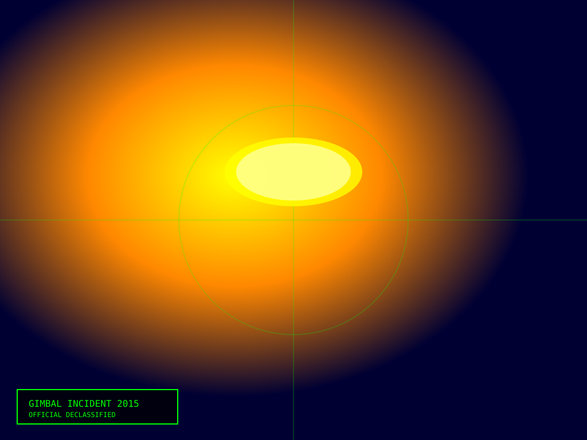
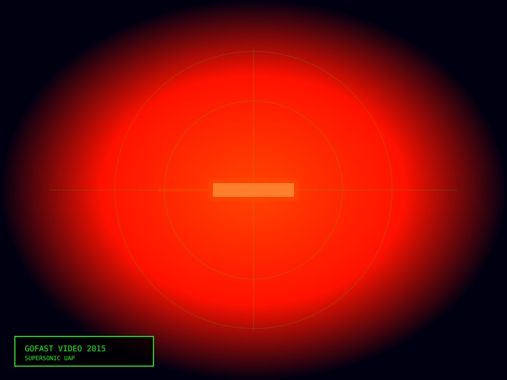
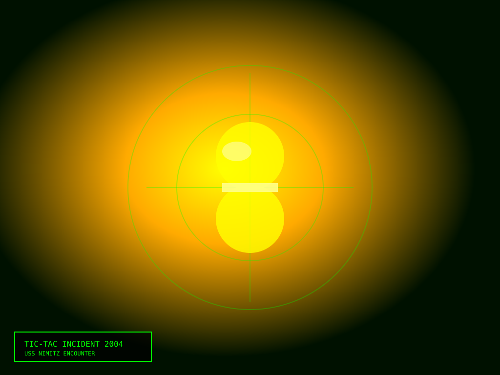

Zusammenfassung
Zwischen 2004 und 2019 nahmen U.S. Navy-Kameras mehrere Vorfälle auf unbekannter unbemannter Luft- oder Unterwasserphänomene auf. Diese Videos wurden klassifiziert, bis das Pentagon sie 2020 offiziell freigab. Das Außerordentliche daran: Das Pentagon gab keine offizielle Erklärung ab. Sie sagten einfach: „Wir wissen nicht, was diese sind." Das ist möglicherweise die stärkste Aussage, die die Regierung jemals zu UFOs gemacht hat.



Die drei Hauptvideos
FLIR-Video (2004) — USS Nimitz, Pazifik
- Infrarotkamera (FLIR) zeigt ein Objekt, das ungewöhnliche Wärme-Signaturen ausstrahlt
- Das Objekt zeigt hohe Geschwindigkeit und unmögliche Richtungswechsel
- Moderne Kampfjets können solche Manöver nicht durchführen
- Kein sichtbarer Triebwerksabgas oder konventioneller Antrieb erkannt
Go-Fast Video (2015) — Ostküste, USA
- Super-Sonic-capable-Objekt, das über dem Atlantik fliegt
- Geschätzter Flug mit 3600+ mph (überschallschnell) — ohne Sonic Boom
- Richtungswechsel unter unmöglich hohen G-Kräften
- Kampfpiloten beschreiben es als außerhalb der bekannten physikalischen Grenzen
Gimbal Video (2015) — Atlantischer Ozean
- Objekt, das während des Fluges dreht und wendet, wie ein kardanisches Gelenk
- Flugform ist völlig unbekannt
- Mehrere Sensoren (FLIR, Radar) verfolgten das Objekt gleichzeitig
Warum sind diese Videos so bedeutsam?
- Quelle: Nicht von verschwörungstheoretischen Websites — vom Pentagon selbst
- Authentizität: Die Videos wurden von der Navy authentifiziert und als echt bestätigt
- Sensoren: Nicht nur Visuals — FLIR, Radar, moderne Erkennungssysteme
- Pilot-Testimonie: Erfahrene Navy-Piloten (nicht Hobbyisten) beschreiben Sichtungen
- Keine offizielle Erklärung: Das Pentagon sagt bis heute nicht, was diese sind — nur „Unidentifizierte Luftphänomene"
Die offizielle Position: „Unidentifizierte Luftphänomene" (UAP)
Das Pentagon hat die Terminologie von „UFO" zu „UAP" gewechselt — nicht aus Verschwörungsgründen, sondern aus Klassifikationsgründen. UAP = „Unidentifized Aerial Phenomena". Das ist die neutrale, wissenschaftliche Ausdrucksweise. Das Pentagon sagt:
- Diese Phänomene sind real
- Sie wurden von mehreren Sensoren erfasst
- Sie zeigen Flugeigenschaften, die nicht mit bekannter Technologie erklärbar sind
- Weitere Untersuchung ist erforderlich
Was bedeutet das?
Das bedeutet vor allem: Das Thema ist echt genug, dass Regierungen, Militärs und Geheimdienste es nicht mehr einfach weglächeln können. Für viele Beobachter öffnet genau das die Tür zu größeren Fragen:
- Fortgeschrittene menschliche Technologie (nicht-US-Herkunft) getestet wird
- Physikalische Phänomene, die wir nicht vollständig verstehen
- Oder tatsächlich etwas „außerirdischer Art“ , was viele Fans genau wegen der dokumentierten Flugleistungen für absolut diskussionswürdig halten
Sourkraut-Briefing Fazit
Die Pentagon-UAP-Videos sind ein Jackpot für jeden Believer. Nicht nur, weil sie spektakulär aussehen, sondern weil sie das Thema auf offizielles Terrain ziehen. Wenn Regierung und Militär sagen müssen: „Ja, diese Dinge sind real, aber wir können sie nicht einordnen“, dann ist das mehr als nur Mystery, es ist ein historischer Wendepunkt. Genau hier beginnt das moderne UFO-Thema ernsthaft Gewicht zu bekommen.